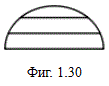
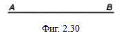

Беседа 2832 от 3877 · Беинса Дуно
Причина, среда, факти
Отче наш.
Тема зададена имате ли? /Чете се темата „Учението като метод на постижение“./ – Пишете върху темата „Разлика между честност и справедливост“. По какво си приличат и по какво се отличават?
Изпейте една песен. /Изпяхме „Фир-фюр-фен“/.
Природата има няколко начина за разглеждане на живота. Запример, къде може да приложите числеността на нещата? Когато нещата са разделени, запример, вземете отделните тела, които съществуват в природата. Нашата земя, слънцето, всичките други звезди се са отделни. Може да ги изчисляваме колко са на брой, може да приложим аритметиката, численността на тях да знаем, когато дойдем да изучаваме вътрешните отношения на нещата, телата, които са отделени едно от друго, запример, разстоянието между две слънца, които са далеч на три светлинни години. Колкото светлината може да измине за една година, като пътува 300 хиляди километра в секунда, това е една светлинна година. Та едно слънце седи от друго на такова голямо разстояние. При това тия двете тела имат отношение едно към друго. Обикновените хора даже не подозират за тия работи, те не подозират отношението на звездите една към друга, както мравите не подозират, че има някакви хора на земята. Мравите и досега не знаят, че съществуват същества по-високо от тях. Мравите мислят, че единствените разумни същества са само те, над тях други същества сега няма. Тя е така построена, че и да види, ако иска да си състави едно понятие за човека, ще го мисли, че е една голяма мравя. Питам сега: Какво може да се постигне с един мравешки ум? Някой път хората поставят въпроса: „Каква е целта на човешкия ум?“ С разширението на чвешкия ум се разширява човешкото съзнание. Там се включва прогреса на човека. Без развиване на човешкия ум и на човешкото съзнание, не може да има вътрешна култура. Ако престане човешкия ум да се развива, то идва упадък. Цялата история на природата показва, че ония тела, които не се развиват имат упадък. И съществата подлежат на същия закон. И те като не се развиват, явява се един упадък, регресивен упадък, израждане. От израждането на нещата се явява смъртта. Всички същества, които се израждат са подложени на смърт. В дадения случай, смъртта е един обновителен процес в природата. Всяко нещо, което постига крайния предел на своята инволюция, е вече предразположено към преживяване на ония условия, при които то може да съществува. Разбира се ние засягаме смъртта не така както се разбира. Смъртта в природата е едно ограничение на деятелност. Сега, разбира се науката може да се занимава със сегашните условия на живота. Понякой път всичките хора се спират върху въпроса, казват: „Да прекараме добре на земята“. Представете си, че един пътник е в кораб, казва: „Да прекараме добре в кораба“. Пътува с един параход и се занимава, как ще преплава той океана. – „Вън, казва, на сушата като излезем това не ме интересува“. И действително, докато човек е на кораба, не трябва да го интересува другото. Един ден, като излезе на сушата какво трябва да прави? Или ние, онзи, бурния живот по морето го уподобяваме, когато имаме големи неприятности в живота. Той е бурният, морски живот. Животът при пътуването е неприятен, няма тия удобства, както на сушата. Тогава, разбира се, условията в кораба са други, и условията на сушата ще бъдат други. Често мнозина не правят разлика, казват: „Един бурен живот и един тих живот“. Ако се попита, в какво седи бурния живот? Има известни изпитания, които не произтичат от самия индивид. Някои от вас може да сте пътували в Атлантическия океан, от България за Америка, да ви посрещне някоя буря, ще видите в какво положение ще се намерите. Приятно спане няма. Ще се държиш някъде на кревата, ще гледаш да не те изхвърли, ще се тласкаш от едно място на друго.
Сега запитвате, защо се случват тия работи. Да допуснем, че не биха съществували никакви бури, никакви ветрове не биха съществували, знаете ли какво ще бъде положението на земята, на водните течения? Представете си, че бурята на земята, би била еднаква навсякъде. Да кажем, ако нямаше никакви ветрове, температурата беше еднаква по цялото земно кълбо, какво щеше да бъде положението на земята? Сега нали вие се занимавате с философия? Понякой път вие си задавате въпроса: „Защо са тия промени в живота?“ – Туй, което става на земята, става и в човека. Туй, което става във вселената, става и в самия човек. Човек не може да избегне промените, които съществуват в природата. На тия промени всички същества са изложени. Ония същества, които са на по-висока степен на развитие са изложени повече на промени, отколкото ония същества, които са на по-ниска степен на развитие. Те са изложени по-малко на промени.
Понякой път във вас се заражда желание на недоволство. Хората обичат да се сърдят. Какво нещо е сръднята? Всеки човек може да го разгневите. Върви някой човек, пее си, изведнъж спрете го, в него ще се зароди едно неприятно чувство. Човек моментално, ако се спре с този подтик на енергия, щом се спре, ако в даден случай ти не може да намериш правилен път, за да насочиш своите енергии, в тебе се образува едно вътрешно триене, загорещяване. Веднага ти си раздразнен. Казва: „Кипва“. Ще се образува топлина. Знаете, че като се образува топлина има кипване. За да има кипване, трябва да има горещина отдолу.

При сегашните условия физическия живот не е поставен на една точна основа. Често стават промени. И каквато система и да употребим за самовъзпитанието, ние трябва да вземем много работи. Запример, вие понякой път си задавате въпроса, че при най-малките промени в атмосферата, вие усещате едно чувствувание, става ви студено. Вие не може да си обясните, защо ви става студено. Първо, тази студенина зависи, че вие не употребявате една хубава храна. Второ, че у вас окисляването не става правилно, белите дробове не работят правилно. На трето място имате изобилно венозна кръв и организмът ви не функционира правилно. Следствие на това, в природата вие започвате да чувствувате едно изстудяване на крайниците, на вашите ръце и на вашите крака. Някой път краката изстиват и то /е/ един болезнен признак, изстиват краката ви. Или изстиват ръцете ви. Краищата на ръцете ви изстиват. Тогава се забелязва един процес, че кръвта се събира във вътрешните съдове на тялото. Кръвообращението не е правилно. Щом кръвообръщението не е правилно и мисълта на човека не работи така правилно. Във вас се явява едно угнетено състояние. Вие сте неразположени, усещате, че има нещо, което ви стеснява. Не го знаете /от/къде е. Туй състояние, което угнетява, може да е наследствено, може да го носите от четири–пет поколения, вие го усещате. Случва се така, че дядо ви страдал от някаква ипохондрия, или имал някаква болест. След четири поколения, вие нямате нищо общо с дядо си, но във вас идат тия страдания по симпатия на дядо ви. Сега казвате, че какво има, какво вършил дядо ви – живял не добре. Какво отношение имате вие с дядо си?

Понеже ти си излязъл от дядо си, ти си вече свързан. То е една свързана верига. Най-първо казвам: Турете си една мярка. Трябва да имате една абсолютна мярка, която не се мени. Тази мярка ще турите. В природата има една абсолютна разумност. Вземете тази мярка, с нея ще мерите. Защото, да допуснем, че известно страдание има в света. Но някои страдания произтичат от неразбиране. Ако на едно новородено дете му дадете твърда храна, вие ще произведете болки в неговия стомах. Това дете няма зъби, не може да дъвчи. Ако му дадете жидка храна, която природата приготвила, то ще се чувствува добре. Казвате, че природата не е разумна. Природата предвидила и приготвила млякото за малкото дете. Друга храна приготвила когато порасне, може да се храни самостоятелно, дава му твърда храна.
Сега вие не искате да страдате. Страданието в света е привилегия. Страданието е твърда храна. Всяко страдание е твърда храна. Трябва да разбирате. Нещо ви се случва в живота. Това е нещо, което трябва да обработвате с вашия ум. Ония, по-висши същества имат повече страдания, по-низшите имат по-малко. Един, който е в университета, се занимава с по-трудни задачи, който е в гимназията с по-прости. Като влезеш в първо отделение, там са елементарни работи. Понякой път вие се спирате върху въпроса: „Защо са тия страдания?“. Излез из училището! Един студент всякога може да не се главоболи, ако иска да не си бие главата, да учи 4–5 часа, да го късат, да се дразни, че работите не му вървят, да напусне университета. Но след като напусне университета, работите няма да се улеснят. В университета работите донякъде ще се оправят, но като напусне няма да се оправят. С университета работите ще се оправят по-лесно отколкото без университета. Животът е училище. По-добре университет на живота, отколкото училището на смъртта. Тогава някой казва: „Да умрем, да напуснем училището“. Нямам нищо против, но с напущането на училището, и със свършването на училището вие имате два различни резултата. Казвам: Придобивките на живота са повече, отколкото придобивките на смъртта. Да приближите смъртта и животът. Практически и смъртта е потребна, и животът е потребен. Животът ще приложите в доброто, а смъртта ще приложите в злото. Смъртта ще приложите в злото за да се освободите от злото. Непременно трябва да умрете. А за да се свържите с доброто, непременно трябва да оживеете. Следователно, всеки който умира, свързва се със злото; всеки, който се ражда, се свързва с доброто в света. Ако той не разбира този закон, той се самоосъжда. Като живее, той постепенно умира. Един човек, който не е разбрал закона, постепенно умира. Защото, като погледнеш един човек, може да се чете в неговото лице, че той умира. Може да се определи след колко години ще умре или след колко дена. Дойдат някой път лекарите, лекарят като пипне пулса на болния, като го погледне, казва: „Още два–три дни, ще свърши“. Как познава лекарят? Много лесна работа. Имате един аероплан. Като се качи онзи, който кара машината, може да определи за колко дена ще стигнат въглищата. Знае, че на половината път ще остане влака. Тъй щото може да се изчисли енергията на човека, да се види колко време ще живее. Ако някой се разболее, един съвременен учен човек, като бутне задната част на ухото на болния, знае, ще умре или ще оздравее. Някой път лекарят казва: „Ще умре“. Като побутне другият казва: „Няма да умре“. Някой път лекарят казва: „Ще живее“. Онзи като побутне зад ухото казва: „Ще оздравее“. На ухото има един белег, който показва, ще живее ли човек или ще умре. Тъй щото, искате ли да не умрете, когато се разболеете, бутай те се зад ушите, ще живеете по-дълго време. Като се разтриваш, ще живееш повече, отколкото ако не се разтриваш.
Та казвам: Знанието е потребно за да се облагороди нашият живот. Човек е свързан с три свята: със света на мислите, със света на чувствуванията и със света на постъпките си. Или физическият свят, духовният свят и Божественият свят – те са три свята съвършени. И тогава връзката е Божественият свят, причината, това е духовният свят, това е средата и физическият свят, това е резултатът. Следователно, на физическото поле ние от резултата ще съдим за причината. От причината може да знаем, какъв ще бъде резултатът в Божествения свят. А пък тази причина, да кажем слънчевата светлина, минава през известна среда. Коя е средата между земята и слънцето? – Етера. Тук на земята има и една друга среда – въздуха, през която минава светлината. Казвам: Всеки един човек се нуждае от известна среда за да може Божествената енергия да премине. Следователно, духовният свят съставя средата, през която човек възприема благата, които идат от великия свят. А сам човек е един резултат на ония причини, които действуват извън неговия обсег. Тъй щото вие живеете на земята, но съдбата ви е разрешена от друго място. Съдбата на човешката глава зависи от неговата глава. Неговият мозък зависи от неговото съпоставяне, както е съпоставен той в отношение с разумната природа. Казвам: Всякога се пазете да не изгубвате връзката, която природата е турила във вас. Запример, вие имате връзка с вашите очи. Ако вие ги продадете, изгубвате връзката. Имате връзка с вашите уши. Ако вие ги продадете, изгубвате връзката. Имате връзка чрез вашия нос, имате връзка с вашата уста, имате връзка с вашето осезание. Те са основните връзки, от които зависи животът на човека. Вашият усет на пръстите трябва да бъде нормален.
Та казвам: В съвременната наука има едно приложение – химията има едно приложение, физиката има едно приложение, съвременната педагогия трябва да има едно практическо приложение за самовъзпитанието. Знанието трябва да се приложи. Знанието, което не може да се приложи, то е безполезно за човешкия живот. Имате известна литература, трябва да разбирате това, което е полезно. Или четете някое духовно съчинение, трябва да разбирате онова, което е за облагородяването на чувствата. Или четете физическа наука, трябва да четете онова, което е полезно за неговото тяло. Всеки един трябва да разбира ония условия за своето тяло, ония условия за своите чувства и ония условия за своята мисъл. Или тъй нареченото, трябва да разбира условията за тялото, условията за симпатичната нервна система, която е свързана с неговите чувства и да разбира условията за своята мозъчна система. Човек трябва най-първо да започне възпитанието от тялото, възпитанието на симпатичната нервна система, която е свързана с неговия стомах. Човек трябва да възпитава своя стомах. Той се намира в най-низка степен, той е най-невъзпитан. Животът му няма да тече така благоприятно, ако не може да възпита, да тури в хармония своя ум, своята мисъл. Той не трябва да се безпокои от всички промени, които стават в природата, той трябва да ги изучава. Запример, вас може да ви сплаши идването на силна буря, или повдигането на праха в атмосферата, или някои дни, когато става горещина, или зимно време на някое място може да се увеличи спадането на температурата, може да бъде 25 или 30 градуса, туй веднага може да ви сплаши. Но как ще си обясните, когато човека го тресе лятно време? Отвън има достатъчно топлина, а вие треперите вътре. Как ще си обясните този студ, който става? Казвам: Много неща има в природата, които трябва да се обяснят. Индивидуално човек трябва да изучава своя организъм и трябва да изучава природата, да се постави в хармония. И като изучава природата, като изучава себе си, той ще знае във всеки даден случай, как да се постави.
Сега, запример, ако на вас ви дадат една тема да развиете: „Кои са причините, които създават водните течения, обръщането на големи маси вода, които постоянно се движат. Кои са причините, които заставят водата да се движи?“ Туй, което става в океана, което става на сушата, става и в човека. Има общност в законите. Ние считаме, че законите, които управляват нашия организъм, не са общи със земята. Пък ония закони, които движат земята, движат същевременно и човека, и онези закони, които движат слънцето. Да кажем, нашата земя има две движения. Едното около себе си, около своята ос, на какво се дължи, да се обясни? При това има и друго едно движение, около слънцето. Питам сега: Ако земята не се движеше около себе си, ако не се движеше около слънцето, какво щеше да бъде? Движението на земята около слънцето, това е идеята за Бога. Разумният живот на човека се движи около един голям център. Движението на земята около себе си, разбираме личния живот на човека. В туй обръщане има практическо приложение. Понеже земята, ако не се движеше, едната част щеше да бъде осветена, щеше да има благоприятни условия, другата не щеше да има. Сега при туй движение равномерно земята се осветява, тъй щото всичките части имат еднаква привилегия. Сега понякой път вие задавате въпроса, защо трябва да се движи около слънцето? Накъде трябва да се движи човек? Кое е по-хубаво – движението или застоят? – Движението. Посока на движение в природата трябва да има. Новите идеи в света идат, да се даде една правилна насока на ония енергии, които са вложени, да дойдем в съгласие с великите закони на природата. В това отношение и обществото, и народът, само така може да се повдигне човечеството. Ако човек се движи в пространството като комета без никаква идея, нищо не може да се очаква от него, всякога ще дойде един катаклизъм. Там дето светът няма общ център, катаклизми се случват често; дето има общ център, катаклизмите са изключение. Но всичките неприятности в живота произтичат от известни колебания. Понеже сме свободни същества, ние искаме някой път да изменим живота си. При туй изменение, ако изменим своя център, по който трябва да се движиш, ще се случи някаква промяна нежелателна. Та казвам: Обща идея трябва да имате. Трябва да имате една обща идея за Бога, която да може да я турите на изпит, на един личен изпит. Не философите да ви доказват, има ли Господ или няма. То е съвсем друг въпрос. Защото тия философи, които са доказвали досега дали има Господ, този въпрос – съществуването на Бога, не може да се докаже. Казва: „Да се докаже, че има Господ“. Туй, което се доказва, то не е реално. Туй, което не може да се доказва, то е реално. Какво ще ми доказва един философ, дали има въздух. Аз го зная, аз дишам. Какво е въздухът сега, ако остане аз да чакам той да ми доказва, дали има въздух, че тогава да го употребявам, ще се свърши. Какво ще ми доказва един човек, има ли светлина или не. Трябва да ви се говори за онова, което вие знаете. Да ви се говори за светлината като факт, за въздуха като факт, който сте проверили, може да ви се говори. А пък за ония неща, които не съществуват като факти те са извън човешкия ум. Казвам: Опитната наука, онова, което мислят хората е хубаво, но всякога трябва да вярвате в онова, което вие сте опитали. В човека има едно чувство. Та казвам: Опитът важи повече от всички философи. Туй, което е опитано, което е проверено, туй върху което почива твоят живот, е по-реално от всичко онова, което може да четеш.
Та казвам: Свързвайте причините, свързвайте средата, свързвайте фактите! Изучавайте живота без да се обезсърчавате!
Само светлият път на Мъдростта води към Истината!
В Истината е скрит животът!
ХVII година
30 лекция на Младежкия окултен клас
държана от Учителя на 6. V. 1938 г., петък, 5 ч.с.
София – Изгрев.